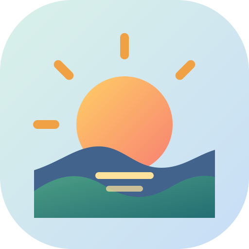

Current · Pixel sunrise
Original stepped landscape and compact palette.
Four Material 3 Expressive directions. The current pixel icon is included for comparison; none of these previews replace it.
Original stepped landscape and compact palette.
Warm sunset, layered hills, and a four-point expressive sparkle.
A distinctive arch frames the sunrise like an inviting game world.

Bold radial sunburst with soft, rounded rays and a clear horizon.
Playful flowing landscape with an asymmetric sunset and bright star.